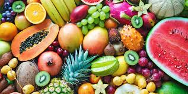
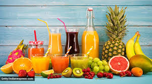
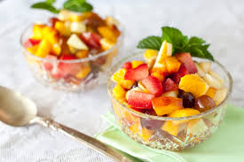
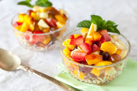
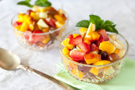
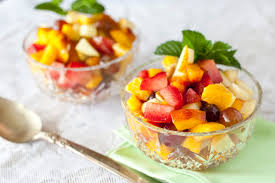
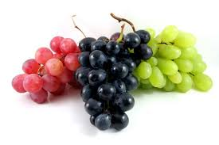

 


Healthy Fruits WebsiteEat fresh • Stay healthy • Live happy |

Apple
Read MoreApples are sweet and crunchy fruits. They are rich in fiber and vitamins. Benefits
|
Banana
Read MoreBananas provide instant energy. They are rich in potassium. Why Banana?
|
Grapes Read MoreGrapes are juicy fruits rich in antioxidants. Types
|
Orange
Read MoreOranges are rich in Vitamin C. They strengthen immunity and improve skin health. |
Mango
Read MoreMango is known as the king of fruits. It is rich in vitamins A and C. |
Pineapple
Read MorePineapple helps in digestion and reduces inflammation. It is rich in enzymes and antioxidants. |
Strawberry
Read MoreStrawberries are rich in antioxidants and Vitamin C. They help improve heart health and skin glow. |
Papaya
Read MorePapaya improves digestion and boosts immunity. It is rich in Vitamin A and enzymes. |
Watermelon
Read MoreWatermelon keeps the body hydrated. It is low in calories and rich in antioxidants. |
ApplePrice: 100/KG |
MangoPrice: 200KG |
BananaPrice: 60/D |
PineapplePrice: 50 |
GrapesPrice: 100/KG |
OrangePrice: 90/KG |
WatermelonPrice: 100/KG |
| Season | Fruits |
|---|---|
| Summer | Mango, Watermelon, Pineapple, Muskmelon, Litchi, Papaya, Jamun |
| Monsoon | Pear, Peach, Plum, Cherries, Jamun, Pomegranate |
| Winter | Apple, Orange, Grapes, Guava, Strawberry, Kiwi |
| Spring | Strawberry, Blueberry, Apricot, Mulberry |
| All Seasons | Banana, Papaya, Coconut, Lemon |
Fruits are the mature, seed-bearing ovaries of flowering plants, serving as a vital food source, rich in vitamins, minerals, fiber, and antioxidants, crucial for health and seed dispersal, encompassing sweet items like apples and bananas, but also botanically including nuts, tomatoes, and grains. They are categorized as fleshy (berries, drupes) or dry (nuts, grains) and offer significant health benefits, helping reduce risks for diseases like heart disease and diabetes.
Health experts recommend consuming at least 2–3 servings of fruits daily. Regular fruit intake helps maintain energy levels, improves digestion, and supplies essential nutrients. A colorful variety of fruits ensures a wide range of vitamins and antioxidants for the body.
Different fruit colors indicate different nutrients. Including a variety of colors in your daily diet helps strengthen immunity, improve eyesight, and protect against chronic diseases.
Certain fruits improve memory, concentration, and mental clarity. They reduce oxidative stress and support healthy brain function.